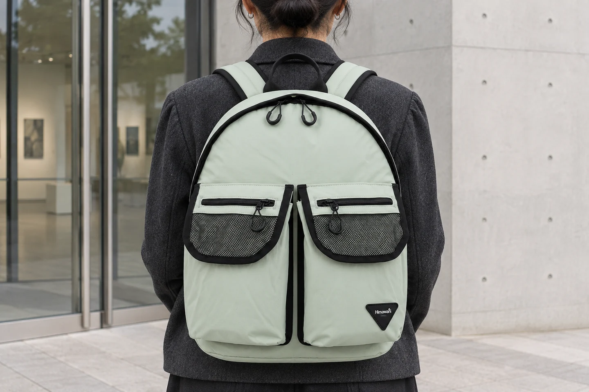
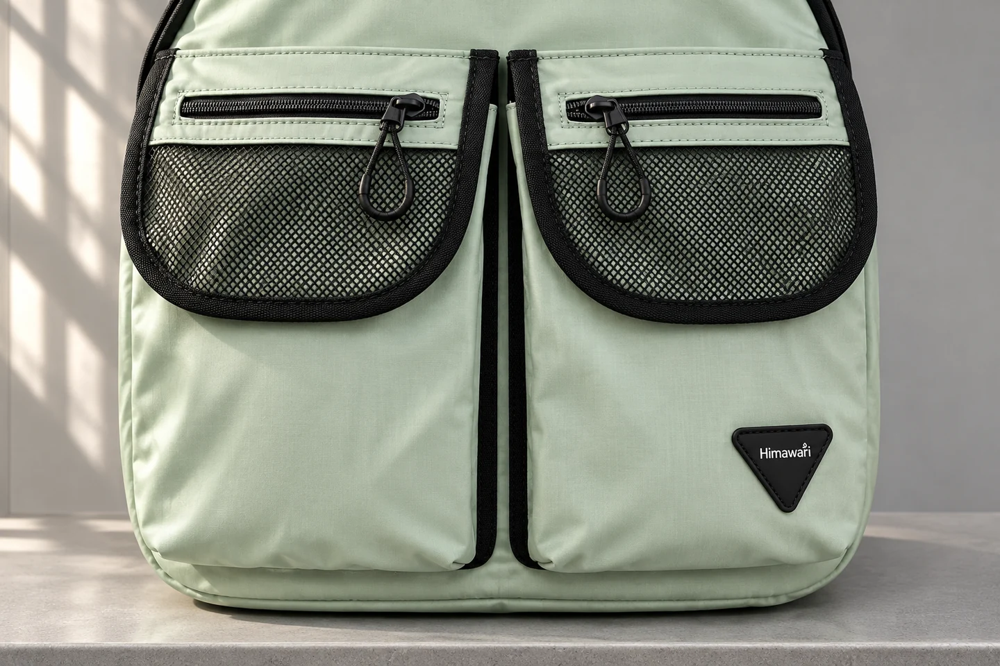
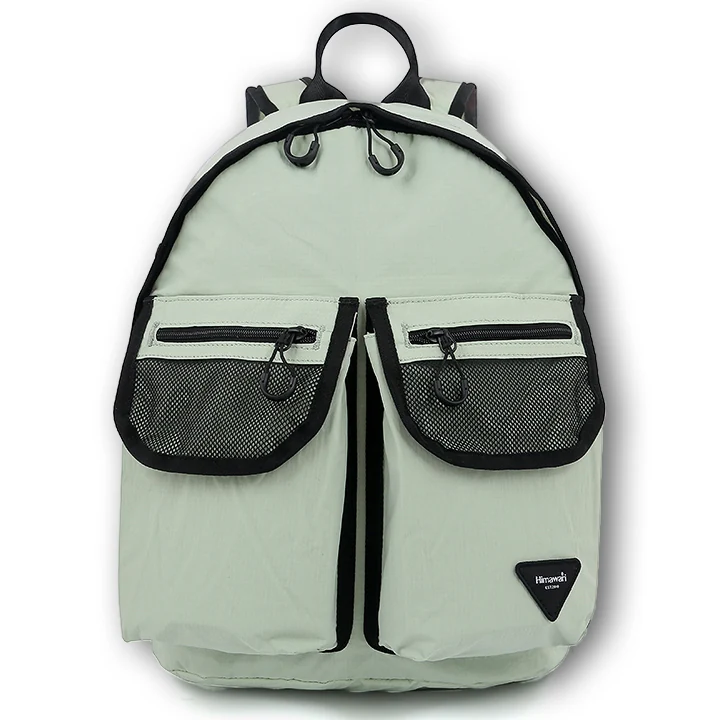

메쉬 앞포켓에 넣은 카드, 밖에서 어디까지 보일까

전시장 출입증을 자주 꺼낼 때는 백팩 앞포켓에 넣는 편이 손이 덜 갑니다. 메쉬가 있는 포켓에서는 출입증의 흰 바탕이나 인쇄된 면이 바깥을 향할 수 있습니다. 포켓의 지퍼를 닫고도 들여다보이는지는 따로 확인해야 합니다. No.1230 민트의 실제 제품 사진에는 앞쪽에 검은 메쉬와 민트색 천이 함께 보입니다. 두 재질이 만나는 자리를 살펴보고 자주 꺼내는 물건과 내용을 가려두고 싶은 물건의 자리를 나눠봅니다.
지퍼를 닫은 포켓을 뒤에서 바라봅니다
No.1230 민트의 위쪽 앞판은 민트색 천으로 이어지고 아래는 두 쪽으로 나뉩니다. 각 쪽에는 짧은 검은 가로 지퍼가 보입니다. 그 아래에는 곡선으로 둘러싸인 메쉬가 있습니다. 메쉬 밑으로는 민트색 원단이 이어집니다. 겉에 보이는 재질은 실제 사진으로 구분할 수 있습니다. 포켓 안감이나 서로 통하는지 여부가 사진에 보이지 않으면 내용물이 드러나는 정도도 실물에서 확인합니다. 포켓을 닫고 앞판을 다시 보면 어디가 메쉬이고 어디가 불투명한 천인지부터 구별하기 쉽습니다.
등에 가방을 멨을 때 앞판은 뒤쪽 사람을 향합니다. 정면을 보면서 걷는 동안에는 메쉬 앞에 무엇이 닿아 있는지 눈으로 확인하기 어렵습니다. 사람이 줄에 서서 가깝게 기다리는 곳에서는 멀리서 봤을 때와 다르게 보일 수 있습니다. 밝은 종이가 메쉬 바로 안쪽에 닿으면 그 자리에 밝은 면이 있는 게 먼저 눈에 들어올 수 있어요. 물건의 윤곽이 드러나더라도 글씨를 읽을 수 있는지는 거리, 빛, 글씨 크기, 메쉬 뒤 안감에 따라 달라집니다.

아무 글씨 없는 종이로 빛과 거리를 바꿔봅니다
붉은 종이와 밝은 종이를 작은 조각으로 준비해 같은 포켓에 번갈아 넣어 보세요. 이름이나 번호가 적힌 카드를 시험에 쓸 이유는 없습니다. 각각을 포켓 안쪽에서 메쉬 가까이 붙여 보았다가 반대편으로 살짝 보내 봅니다. 지퍼를 끝까지 닫은 뒤 가방을 테이블에 놓습니다. 마주 서서 볼 때와 한 걸음 물러설 때, 대각선에서 볼 때 밝은 면이 어떻게 달라지는지 살핍니다. 밝은 종이만 보이고 인쇄된 면은 구분하기 어려운 경우도 있고 안감 때문에 색 차이만 옅게 느껴지는 경우도 있습니다. 포켓을 눌러서 안을 들여다보는 것보다 가방을 평소처럼 놓아둔 상태가 비교하기 좋습니다.
자주 메는 자리에 가방을 올려두고 볕이 들어오는 창가와 실내 안쪽에서 한 번씩 더 보면, 빛이 달라질 때 물건이 눈에 띄는지 알 수 있습니다. 가방 앞판이 앞으로 볼록해질 만큼 짐을 더 넣으면 메쉬에 닿는 부분도 달라질 수 있습니다. 평소 넣는 짐을 담은 날의 모양을 한 번 보는 편이 맨 가방 사진에서 짐작하는 것보다 낫습니다. 확인할 때 손으로 메쉬를 잡아당기지 않아도 됩니다. 넓혀 펼친 메쉬는 실제로 메고 다닐 때의 모습과 다릅니다.
바로 꺼낼 물건과 가려둘 물건의 자리가 달라집니다
휴지나 무지 수납 케이스처럼 겉에서 보여도 괜찮은 물건은 자주 여는 포켓에 두면 찾기 쉽습니다. 카드를 반복해서 보여줘야 한다면 먼저 카드의 내용이 바깥에서 읽혀도 되는지 따져보세요. 이름과 소속이 인쇄된 출입증이나 번호가 있는 종이는 불투명한 케이스에 넣거나 안이 보이지 않는 칸으로 옮길 수 있습니다. 면을 뒤집어 넣는 방법은 손이 덜 가지만 포켓 안에서 카드가 돌아갈 수 있어요. 까만색 케이스가 아니어도 안쪽에 무엇이 들어 있는지 보이지 않는다면 같은 목적으로 쓸 수 있습니다. 큰 카드지갑을 새로 사기 전에는 지금 쓰는 작은 케이스의 여밈을 확인해도 됩니다.
메쉬 포켓 뒤에 별도 공간이 있는 것처럼 보이는 제품도 있습니다. 지퍼가 어느 공간으로 이어지는지 실제로 열어 확인할 수 있다면 손끝으로 입구를 따라가 봅니다. 포켓 윗부분의 메쉬를 가렸는데 아래의 물건 윤곽이 그대로 보인다면 다른 입구로 옮기는 편이 빠릅니다. 노출을 피하려는 물건을 바깥 포켓의 가장 안쪽에 밀어 넣는 습관은, 다음번에 급히 꺼내느라 다른 물건을 함께 잡게 할 수도 있습니다. 어디에 넣었는지 쉽게 기억할 수 있도록 평소 자리를 정해 두면 다른 포켓을 한꺼번에 열 일이 줄어듭니다.

앞포켓을 자주 써도 안에 든 물건은 매일 달라집니다
출입증이 필요 없는 날에는 앞포켓에 매표 영수증이나 간단한 메모지를 잠깐 넣게 됩니다. 이름과 연락처를 적어 건네받은 종이라면 가방을 멜 때 같은 자리에 둘 이유가 줄어듭니다. 장소를 옮기기 전에 안이 보이지 않는 칸으로 넘기거나 케이스에 넣어 두면, 나중에 다른 사람 앞에서 포켓을 여러 개 열어볼 필요도 없습니다. 앞포켓에는 서서 꺼낼 물건 몇 개만 보관하고 장소를 떠나기 전에 임시로 둔 종이가 있는지 보는 식으로 두 자리를 운영할 수 있습니다.
No.1230의 제품 정보에 적힌 외부 크기는 32 × 40 × 18cm입니다. 포켓 안쪽의 면적이나 어느 크기의 카드가 평평하게 놓이는지까지 그 수치로 계산하기는 어렵습니다. 메쉬가 얼마나 가까이까지 보이는지 궁금하다면 먼저 실제 제품의 앞판을 눈높이에 두세요. 평소처럼 지퍼를 닫고 얼마쯤 떨어져 봤는지 기억해 두면, 가방을 바꿔 쓸 때도 무엇을 바깥에 둘지 고르기 편합니다. 밝은 물건이 보이는 정도와 적힌 내용을 다른 사람이 읽을 가능성은 각각 살피면 됩니다. 밝은 날 옆에서 보는 사람이 신경 쓰인다면 뒤에서 한 걸음 떨어져 확인하는 데 그치지 말고 평소 줄에 서는 간격에서도 같은 포켓을 살펴보세요.